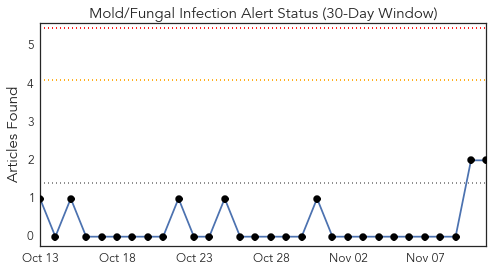
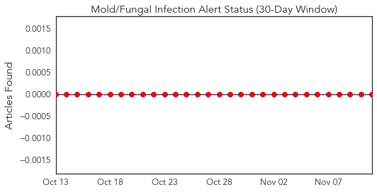
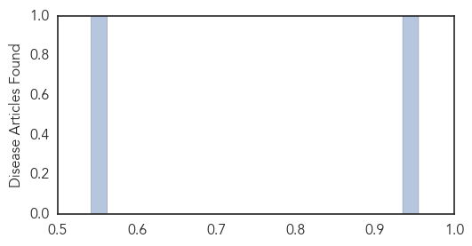
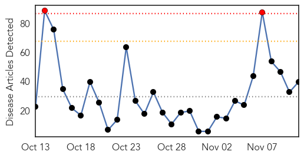
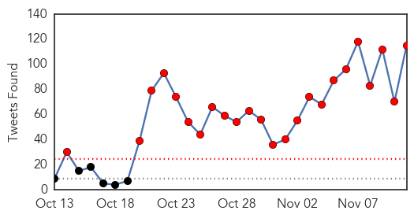
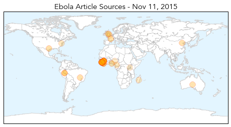
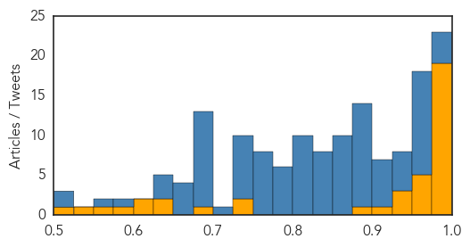

Mold/Fungal
30-Day Web Trend
0 alerts, 0 warnings

30-Day Twitter Trend
0 alerts, 0 warnings

Article Locations

Article Confidences
Top Articles:
Top Tweets:
-
No tweets found for Nov 11, 2015
Ebola
30-Day Web Trend
2 alerts, 0 warnings

30-Day Twitter Trend
24 alerts, 0 warnings

Article Locations
Article Confidences
Top Articles:
- 1.000
- Two children being tested for Ebola virus at Royal Children's Hospital Melbourne are clear
- 1.000
- Ebola: Steps must be taken to prevent catastrophic spread - up to 1.5 million could be infected by January
- 1.000
- The Daily Free Press — The Daily Free Press
- 0.999
- BMA — Praise for doctors' bravery during Ebola crisis
- 0.998
- Ebola Cases Around the World Down to The Single Digits
- 0.998
- JUBILATION IN FREETOWN AS SIERRA LEONE DECLARED EBOLA-FREE
- 0.998
- Ebola remains in Guinea, where the outbreak began
- 0.997
- Ebola remains only in Guinea, where outbreak began
- 0.997
- Sierra Leone declared Ebola free in boon for African mining
- 0.996
- When will the true Ebola Heroes be recognized?National Accord Newspaper
- 0.992
- Ebola ‘Don Don’ in Sierra Leone: Celebration, Tears and Reflection
- 0.988
- Brazil: Man monitored for suspected Ebola
- 0.986
- Brazilian man being tested for Ebola; results in 24 hours
- 0.986
- Brazilian man being tested for Ebola; results in 24 hours
- 0.986
- Brazilian man being tested for Ebola; results in 24 hours
- 0.986
- Sierra Leoneans in USA Memorialize End of Ebola & Reminisce Victims
- 0.984
- Brazilian man tested for Ebola
- 0.980
- Brazil tests man for Ebola, puts others under observation
- 0.977
- Brazil tests man for Ebola, puts others under observation
- 0.968
- Army spent €40m to treat zero Ebola victims
- 0.966
- Solar Light Vigil and March in Sierra Leone to Honour Health Care Heroes on the Eve of the Countdown to Zero Ebola Case
- 0.960
- UNMEER urges SLAJ to rebrand the Yellow Ribbon « Awoko Newspaper
- 0.956
- Impact of China-West Africa Healthcare Cooperation – China Africa Reporting
- 0.955
- Brazilian man being tested for Ebola; results in 24 hours
- 0.945
- How faith leaders became vital in the fight against Ebola
- 0.930
- SEAGA Congratulates President Koroma for Ending the Ebola Outbreak
- 0.929
- SEAGA Congratulates President Koroma for Ending the Ebola Outbreak
- 0.920
- South america tests guy for Ebola, puts others under observation
- 0.898
- LIBERIA: USAID, Global Community "Ebola Response ALERT Project" Gains Momentum
- 0.733
- Ebola vaccine test to go ahead in the North West region
- 0.728
- The Financialization of Ebola
- 0.676
- Elder Bednar visits Africa, missionaries return to Ebola-free Liberia
- 0.648
- Status of Emergency Obstetric and Newborn Care Consultative Conference Kicks off in Freetown November 12
- 0.629
- Ebola fight soldier and maternity care campaigner both awarded the OBE
- 0.619
- Nursing and Midwifery Education Practice Workshop kicks off in Freetown
- 0.608
- Sierra Leone News: ‘We are National Heroes’ -Burial team member « Awoko Newspaper
- 0.588
- Institute of Human Virology Awarded $13M to Strengthen Laboratory Services in Kenya, and $10M to Enhance Biosecurity Infrastructure in Nigeria
- 0.564
- UGA Receives $1.49 Million Grant to Combat TB in Uganda
- 0.529
- Missionaries head back to West Africa after Ebola outbreak
- 0.512
- When the Country is United, We Achieve Great things…….Says Rtd. Brig. Bio in London
Top Tweets:
- 0.989
- World Health Organization praises Sierra Leone for stopping Ebola transmission - https://t.co/0mGSylZQ3t ebola
- 0.985
- Sierra Leone: Ebola outbreak over - https://t.co/xRKkPibRzN ebola
- 0.980
- Ebola outbreak in West Africa - https://t.co/bFsG2qWUB4 ebola
- 0.980
- Ebola outbreak ends in Sierra Leone - https://t.co/2T95MGpyuE ebola
- 0.972
- BREAKING!!!!! EBOLA HOSPITAL CLOSES REFUGEE WITH EBOLA https://t.co/zBbfJ7Tj7N VeteransDay 2DaysTillPURPOSE WhatAFeeling Mizzou Ebola
- 0.960
- West Africa Counts Down to Possible End of Ebola World Health Organization Says - https://t.co/PMlhLVNeO8 ebola
- 0.959
- Sierra Leone is Now Ebola - https://t.co/a8JI5PeQuv ebola
- 0.952
- BREAKING!!!!! EBOLA PATIENT ADMITTED HOSPITAL CLOSES!!! WEST AFRICAN REFUGEE WITH EBOLA https://t.co/zBbfJ7Tj7N
- 0.952
- @ BREAKING!!!!! EBOLA PATIENT ADMITTED HOSPITAL CLOSES!!! WEST AFRICAN REFUGEE WITH EBOLA https://t.co/zBbfJ7Tj7N
- 0.952
- BREAKING!!!!! EBOLA PATIENT ADMITTED HOSPITAL CLOSES!!! WEST AFRICAN REFUGEE WITH EBOLA https://t.co/zBbfJ8aTZl
- 0.952
- BREAKING!!!!! EBOLA PATIENT ADMITTED HOSPITAL CLOSES!!! WEST AFRICAN REFUGEE WITH EBOLA https://t.co/zBbfJ7Tj7N
- 0.952
- BREAKING!!!! EBOLA PATIENT ADMITTED HOSPITAL CLOSES!!! WEST AFRICAN REFUGEE WITH EBOLA https://t.co/zBbfJ7Tj7N
- 0.952
- BREAKING!!! EBOLA PATIENT ADMITTED HOSPITAL CLOSES!!! WEST AFRICAN REFUGEE WITH EBOLA https://t.co/b3OIkqfNeJ
- 0.952
- @TexansCheer BREAKING!!!!! EBOLA PATIENT ADMITTED HOSPITAL CLOSES!!! WEST AFRICAN REFUGEE WITH EBOLA https://t.co/zBbfJ7Tj7N
- 0.952
- @ChrisChristie BREAKING!!!!! EBOLA PATIENT ADMITTED HOSPITAL CLOSES!!! WEST AFRICAN REFUGEE WITH EBOLA https://t.co/zBbfJ7Tj7N
- 0.952
- BREAKING!!!!! EBOLA PATIENT ADMITTED HOSPITAL CLOSES!!! WEST AFRICAN REFUGEE WITH EBOLA https://t.co/zBbfJ7Tj7N
- 0.952
- BREAKING!!!!! EBOLA PATIENT ADMITTED HOSPITAL CLOSES!!! WEST AFRICAN REFUGEE WITH EBOLA https://t.co/zBbfJ7Tj7N
- 0.943
- Rebuilding Sierra Leone's economy after Ebola - https://t.co/XTrEPnUFcb ebola
- 0.940
- BioFire Defense Ebola Test Fares Well in Sierra Leone UK Evaluation - https://t.co/9RXQlnKmTF ebola
- 0.934
- An Anthropological View of the Ebola Outbreak - https://t.co/xLlYns80a4 ebola
- 0.927
- Scientists model Ebola drug delivery on virus's infection route - https://t.co/u6UUA1gO75 ebola
- 0.927
- How Ebola Spread: Map Could Aid Outbreak Responses - https://t.co/pIBmO5uBOk ebola
- 0.923
- Sierra Leone Free of Ebola Transmissions - https://t.co/uWAazPQYlD ebola
- 0.910
- How Ebola Spread: Map Could Aid Outbreak Responses - Live Science https://t.co/oePMLDxSHy ebola EVD
- 0.902
- Brazil tests man for Ebola shuts down health unit - RTE.ie https://t.co/eVOS8nHuuR ebola EVD
- 0.901
- Transmission network of the 2014–2015 Ebola epidemic in Sierra Leone - https://t.co/4LgkBPFiqE ebola
- 0.901
- Computer model reveals deadly route of Ebola outbreak - https://t.co/DkLJcI8pzd ebola
- 0.901
- Computer Model Reveals Deadly Route of Ebola Outbreak - https://t.co/sDunyATi6M ebola
- 0.900
- Brazil tests man for Ebola shuts down health unit - https://t.co/CmlzWqqdHO ebola
- 0.898
- BREAKING!!!!! EBOLA PATIENT ADMITTED HOSPTIAL SHUT DOWN!!! WEST AFRICAN REFUGEE HAS EBOLA https://t.co/zBbfJ7Tj7N
- 0.895
- Sierra Leone declared Ebola free in boon for African mining - https://t.co/pKPrzR8PfV ebola
- 0.892
- Ebola in Liberia: A Summing Up - https://t.co/c2R74XjRfK ebola
- 0.891
- Sierra Leone's Tourist Industry Recovering from Ebola - https://t.co/YIMfzBBH2B ebola
- 0.887
- New model fills the gaps in charting Ebola outbreak - https://t.co/CWP6ynBPlt ebola
- 0.880
- BREAKING!!!!! EBOLA PATIENT ADMITTED HOSPITAL CLOSES!!! REFUGEE WITH EBOLA https://t.co/zBbfJ7Tj7N
- 0.880
- BREAKING!!!!! EBOLA PATIENT ADMITTED HOSPITAL CLOSES REFUGEE WITH EBOLA https://t.co/zBbfJ7Tj7N
- 0.880
- BREAKING!!!!! EBOLA PATIENT ADMITTED HOSPITAL CLOSES REFUGEE WITH EBOLA https://t.co/zBbfJ7Tj7N
- 0.880
- BREAKING!!!!! EBOLA PATIENT ADMITTED HOSPITAL CLOSES REFUGEE WITH EBOLA https://t.co/zBbfJ7Tj7N
- 0.880
- BREAKING!!!!! EBOLA PATIENT ADMITTED HOSPITAL CLOSES REFUGEE WITH EBOLA https://t.co/zBbfJ7Tj7N
- 0.879
- Sierra Leone Now Declared Ebola Free By WHO - https://t.co/m27PQ3gELT ebola
- 0.879
- Sierra Leone Conquered Ebola And Celebrated The Best Way - https://t.co/WoKUgbQJkr ebola
- 0.873
- Sierra Leone Conquered Ebola And Celebrated The Best Way Possible - https://t.co/rnaUP9CgQt ebola
- 0.868
- ebola - https://t.co/lIMZ0QvXHd ebola
- 0.868
- Ebola - https://t.co/Y92qOGlfRk ebola
- 0.863
- Now That Sierra Leone Is Ebola Free Development Next! - https://t.co/LL2CsYc4cy ebola
- 0.863
- Baltimore researchers are helping Nigeria prevent another Ebola outbreak - https://t.co/XaU753g3Rc ebola
- 0.859
- I have Ebola lala - https://t.co/WZb4nxXUnV ebola
- 0.858
- Germany Spends $41Mln to Cure Zero Ebola Victims in West Africa - https://t.co/qyWtC006tI ebola
- 0.853
- Penn Vet researchers handicap Ebola and other dangerous viruses - Penn Current https://t.co/pELbKkSXX3 ebola EVD
- 0.851
- Ending Ebola in Sierra Leone – a victory by and through communities - https://t.co/AZl62Y0uI7 ebola
Showing top 50 tweets...